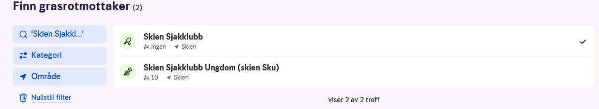

Slik deler du Grasrotandelen med oss!
Grasrotandelen er Norsk Tippings ordning som gir deg mulighet til å støtte en valgfri klubb eller forening, uten at det koster deg noe ekstra. Når du har valgt en mottaker, går inntil 7 % av innsatsen din direkte til klubben hver gang du spiller hos Norsk Tipping.
Du kan enkelt velge Skien Sjakklubb eller Skien Sjakklubb Ungdom som mottaker av Grasrotandelen på én av følgende måter:

-
På nett
- Gå til www.norsk-tipping.no
- Logg inn med BankID
- Søk opp Skien Sjakklubb eller bruk organisasjonsnummer 983 820 247
- Velg klubben som din Grasrotmottaker. Du kan bruke både "Skien Sjakklubb" eller "Skien Sjakklubb Ungdom"
-
I Norsk Tipping-appen
- Logg inn i appen
- Gå til «Grasrotandelen»
- Søk opp og velg Skien Sjakklubb
Viktig å vite
- Grasrotandelen koster deg ingenting ekstra
- Du kan kun støtte én mottaker av gangen
- Du kan når som helst bytte eller avslutte din Grasrotmottaker
- Alle midler går direkte til klubbens aktivitet og tilbud
Ved å dele Grasrotandelen bidrar du til å styrke klubbens arbeid og tilbud i lokalmiljøet. Tusen takk for støtten!